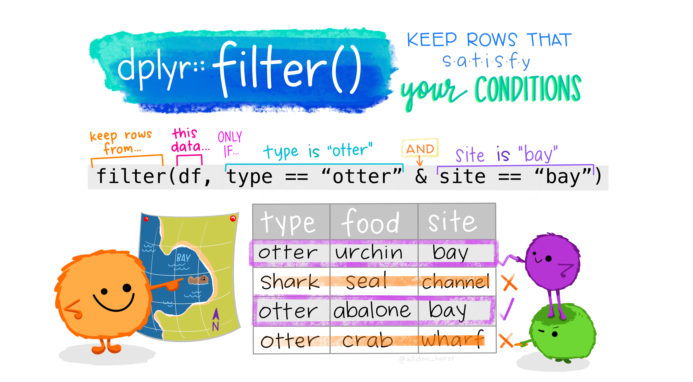
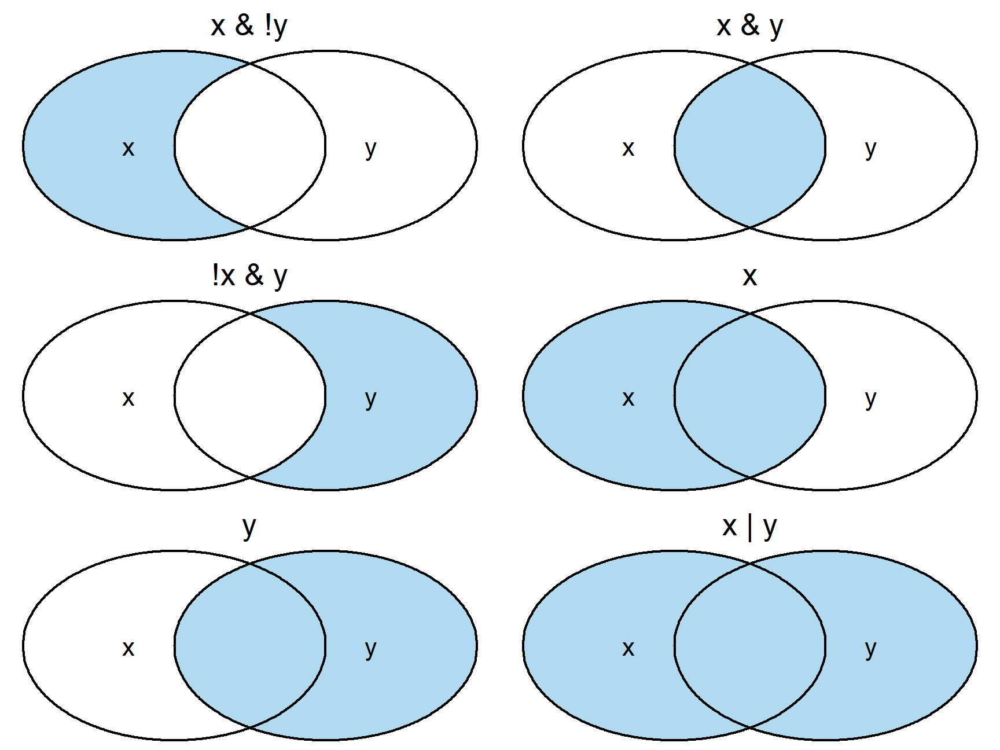
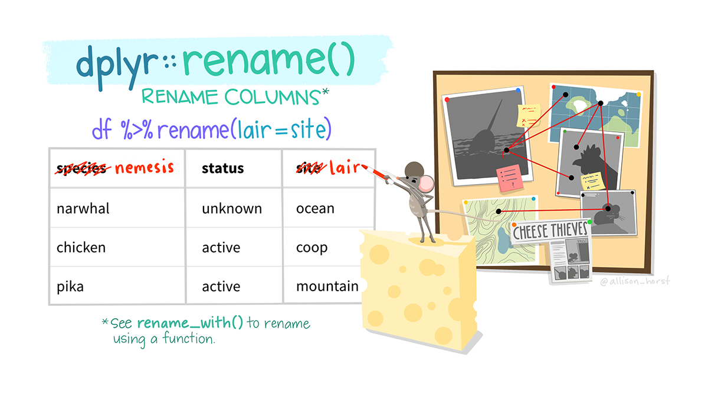

Day 3: Data Wrangling
Joy Nyaanga / 2023-10-26
Slides here
Data Wrangling in R
On Day 1 we became familiar with R, its syntax and basic coding principles. Hopefully after completing the basic introduction, you feel more comfortable with the key concepts of R. However, don’t worry if you feel like you haven’t understood everything - this is common and perfectly normal! Learning R takes time and practice.
Today, in Session 1 we discussed what tidy and untidy data are, and why a tidy data structure is useful. This process of taking data from an untidy format to a tidy format is often referred to as data wrangling. Next we discussed the {tidyverse} - a collection of packages for data science in R.
Using the powerful {tidyverse} allows us to “level-up” our approach to data wrangling.
The learning goals for today’s session are:
- know how to import and export data using
{readr}and{readxl}- understand methods of handling and manipulating data with
{dplyr}
Getting started with the {tidyverse}
The very first thing we need to do is install (if you haven’t already) and load the {tidyverse} package.
# To install
install.packages("tidyverse")
# To load
library(tidyverse)
## ── Attaching core tidyverse packages ──────────────────────── tidyverse 2.0.0 ──
## ✔ dplyr 1.0.10 ✔ readr 2.1.4
## ✔ forcats 1.0.0 ✔ stringr 1.5.0
## ✔ ggplot2 3.4.4 ✔ tibble 3.1.8
## ✔ lubridate 1.9.3 ✔ tidyr 1.3.0
## ✔ purrr 1.0.2
## ── Conflicts ────────────────────────────────────────── tidyverse_conflicts() ──
## ✖ dplyr::filter() masks stats::filter()
## ✖ dplyr::lag() masks stats::lag()
## ℹ Use the conflicted package (<http://conflicted.r-lib.org/>) to force all conflicts to become errors
# if you are unsure whether you already have tidyverse installed. Simply
# execute this command first.
{readr} and {readxl}
{readr} and {readxl} are helpful when importing and exporting data. We can use the {readr} package to handle csv or tsv files. It would look something like this:
library(readr)
sample_csv_data <- read_csv("sample_csv.csv")
write_csv(x = sample_csv_data, file = "sample_data_saved.csv")
Notice in the above example, we are performing two actions, data import and data export. We can use the read_csv function to read in a file that exists somewhere on our computer. After performing any necessary analysis, we can then export our data back to a csv file using the write_csv function. write_csv has a few possible arguments but here we are using two: “x” and “file”. The “x” argument details the data frame that we want to save. The “file” argument details what we want to name our new file.
Similarly, we can use {readxl} to handle reading excel documents:
library(readxl)
sample_excel_data <- read_excel("sample_excel.xlsx")
Unlike our first example, the {readxl} package cannot write an excel document to your computer. This may not be a problem since Excel is able to read and open csv and tsv files easily. However, if you want to write data to Excel files you can use the {openxlsx} package. Usage would look like this:
library(openxlsx)
write.xlsx(x = sample_excel_data, file = "sample_data_saved.xlsx")
The {dplyr} package
As we discussed in Session 1, the {dplyr} package is part of the {tidyverse}.
It is installed and loaded with the {tidyverse} package (but can actually be installed/loaded on its own as well). {dplyr} is designed to help users manipulate or transform data. Think of the {dplyr} functions as verbs that act on data.
The RStudio community provides a handy reference guide for the use of {dplyr} functions.
Check it out here.
In Session 1 we covered a subset of the {dplyr} functions. Generally, these functions can be characterized by the component of the data they work with:
Rows:
filter()chooses rows based on column values.
Columns:
select()changes whether or not a column is included.rename()changes the name of columns.mutate()changes the values of columns and creates new columns.xxx_join()adds columns, matching rows based on the keys.
Groups of rows:
group_by()groups rows by columns.summarize()collapses a group into a single row.
Getting started with penguins
We will revisit the palmerpenguins data set once again!
On Day 1, we imported an excel file containing the penguins data.
Today we will use the palmerpenguins R package.
# First install the package
install.packages("palmerpenguins")
# Next load the package and assign the data
library(palmerpenguins)
penguins <- palmerpenguins::penguins
In the code chunk above, we assigned the penguins data set - specifying that is was from the palmerpenguins package using the :: (which basically means ’look inside palmerpenguins for penguins’).
We have a few options for previewing the data, some of which we’ve discussed previously. We can …
-
Click on the variable in the Environments window
-
Type the name of the variable in the Console
-
Use the following
{dplyr}functiondplyr::glimpse(penguins)## Rows: 344 ## Columns: 8 ## $ species <fct> Adelie, Adelie, Adelie, Adelie, Adelie, Adelie, Adel… ## $ island <fct> Torgersen, Torgersen, Torgersen, Torgersen, Torgerse… ## $ bill_length_mm <dbl> 39.1, 39.5, 40.3, NA, 36.7, 39.3, 38.9, 39.2, 34.1, … ## $ bill_depth_mm <dbl> 18.7, 17.4, 18.0, NA, 19.3, 20.6, 17.8, 19.6, 18.1, … ## $ flipper_length_mm <int> 181, 186, 195, NA, 193, 190, 181, 195, 193, 190, 186… ## $ body_mass_g <int> 3750, 3800, 3250, NA, 3450, 3650, 3625, 4675, 3475, … ## $ sex <fct> male, female, female, NA, female, male, female, male… ## $ year <int> 2007, 2007, 2007, 2007, 2007, 2007, 2007, 2007, 2007…
It looks like there are 8 variables or columns that we have to work with.
The Pipe Operator
Before we get into the main functions within {dplyr}, it is useful to discuss what is known as the pipe operator. The pipe operator looks like this in R %>%. When you see the pipe %>% think of it as the word ’then’. The pipe tells you to do one thing and then do another, pushing data from left to right. The pipe operator gets loaded in when we load the {dplyr}package.
Generally, the pipe operator allows you to string a number of different functions together in a particular order. For example, if you wanted to take data frame A and carry out function B on it, you could depict this with an arrow pointing from A to B:
A -> B
If we didn’t use pipes, this would look like the following in base R:
B(A)
Whereas with the pipe operator it would look like:
A %>% B
This is particularly useful if you are performing multiple actions on a data frame:
A -> B -> C -> D
A %>% B %>% C %>% D
And, even more readable when each of these steps is separated out onto its own individual line of code:
A %>%
B %>%
C %>%
D
In the examples below, we’ll use this pipe operator often. Just remember, it takes output from the left hand side and feeds it into the function that comes after the pipe.
Select columns using dplyr::select()
Select individual columns
In Exercise 9 from Day 1, we used base R to select columns of interest:
Select the columns species, island, body_mass_g, and year.
penguins[, c("species", "island", "body_mass_g", "year")]
In this exercise we explored the use of bracket notation for selecting variables.
We are able to perform the same selection using dplyr::select().
Exercise 1: Use the
dplyr::select()function to keep only the species, island, body_mass_g, and year variables in our penguins data.Click for Answers
penguins %>% dplyr::select(species, island, body_mass_g, year)## # A tibble: 344 × 4 ## species island body_mass_g year ## <fct> <fct> <int> <int> ## 1 Adelie Torgersen 3750 2007 ## 2 Adelie Torgersen 3800 2007 ## 3 Adelie Torgersen 3250 2007 ## 4 Adelie Torgersen NA 2007 ## 5 Adelie Torgersen 3450 2007 ## 6 Adelie Torgersen 3650 2007 ## 7 Adelie Torgersen 3625 2007 ## 8 Adelie Torgersen 4675 2007 ## 9 Adelie Torgersen 3475 2007 ## 10 Adelie Torgersen 4250 2007 ## # ℹ 334 more rows
Select a range of columns
We can also use dplyr::select() to keep a range of columns. For example, we may be interested in keeping the first 4 columns in this data: species, island, bill_length_mm, bill_depth_mm.
Exercise 2: Select the range of columns from species to bill_depth_mm without writing out all column names.
Click for Answers
penguins %>% dplyr::select(species:bill_depth_mm)## # A tibble: 344 × 4 ## species island bill_length_mm bill_depth_mm ## <fct> <fct> <dbl> <dbl> ## 1 Adelie Torgersen 39.1 18.7 ## 2 Adelie Torgersen 39.5 17.4 ## 3 Adelie Torgersen 40.3 18 ## 4 Adelie Torgersen NA NA ## 5 Adelie Torgersen 36.7 19.3 ## 6 Adelie Torgersen 39.3 20.6 ## 7 Adelie Torgersen 38.9 17.8 ## 8 Adelie Torgersen 39.2 19.6 ## 9 Adelie Torgersen 34.1 18.1 ## 10 Adelie Torgersen 42 20.2 ## # ℹ 334 more rows
Exclude columns
We can also use the dplyr::select() function to exclude variables from our data. We use the minus sign (-) in front of a variable name to exclude it.
Exercise 3: Exclude …
- The year and island columns
- The range of columns from bill_length_mm to body_mass_g
Click for Answers
penguins %>% dplyr::select(-year, -island)## # A tibble: 344 × 6 ## species bill_length_mm bill_depth_mm flipper_length_mm body_mass_g sex ## <fct> <dbl> <dbl> <int> <int> <fct> ## 1 Adelie 39.1 18.7 181 3750 male ## 2 Adelie 39.5 17.4 186 3800 female ## 3 Adelie 40.3 18 195 3250 female ## 4 Adelie NA NA NA NA <NA> ## 5 Adelie 36.7 19.3 193 3450 female ## 6 Adelie 39.3 20.6 190 3650 male ## 7 Adelie 38.9 17.8 181 3625 female ## 8 Adelie 39.2 19.6 195 4675 male ## 9 Adelie 34.1 18.1 193 3475 <NA> ## 10 Adelie 42 20.2 190 4250 <NA> ## # ℹ 334 more rowspenguins %>% dplyr::select(-(bill_length_mm:body_mass_g))## # A tibble: 344 × 4 ## species island sex year ## <fct> <fct> <fct> <int> ## 1 Adelie Torgersen male 2007 ## 2 Adelie Torgersen female 2007 ## 3 Adelie Torgersen female 2007 ## 4 Adelie Torgersen <NA> 2007 ## 5 Adelie Torgersen female 2007 ## 6 Adelie Torgersen male 2007 ## 7 Adelie Torgersen female 2007 ## 8 Adelie Torgersen male 2007 ## 9 Adelie Torgersen <NA> 2007 ## 10 Adelie Torgersen <NA> 2007 ## # ℹ 334 more rows
More advanced selection with {tidyselect}
dplyr::select() is actually incredibly powerful when combined with a package called tidyselect. We won’t focus too much on the details of the tidyselect package but it is great if you are working with strings. Think of these functions as “helper functions” that you can use inside dplyr::select().
See some examples below:
# choose only columns containing an underscore
penguins %>%
select(contains("_"))
## # A tibble: 344 × 4
## bill_length_mm bill_depth_mm flipper_length_mm body_mass_g
## <dbl> <dbl> <int> <int>
## 1 39.1 18.7 181 3750
## 2 39.5 17.4 186 3800
## 3 40.3 18 195 3250
## 4 NA NA NA NA
## 5 36.7 19.3 193 3450
## 6 39.3 20.6 190 3650
## 7 38.9 17.8 181 3625
## 8 39.2 19.6 195 4675
## 9 34.1 18.1 193 3475
## 10 42 20.2 190 4250
## # ℹ 334 more rows
# choose only columns beginning with 'b'
penguins %>%
select(starts_with("b"))
## # A tibble: 344 × 3
## bill_length_mm bill_depth_mm body_mass_g
## <dbl> <dbl> <int>
## 1 39.1 18.7 3750
## 2 39.5 17.4 3800
## 3 40.3 18 3250
## 4 NA NA NA
## 5 36.7 19.3 3450
## 6 39.3 20.6 3650
## 7 38.9 17.8 3625
## 8 39.2 19.6 4675
## 9 34.1 18.1 3475
## 10 42 20.2 4250
## # ℹ 334 more rows
# choose only columns ending with 'mm'
penguins %>%
select(ends_with("mm"))
## # A tibble: 344 × 3
## bill_length_mm bill_depth_mm flipper_length_mm
## <dbl> <dbl> <int>
## 1 39.1 18.7 181
## 2 39.5 17.4 186
## 3 40.3 18 195
## 4 NA NA NA
## 5 36.7 19.3 193
## 6 39.3 20.6 190
## 7 38.9 17.8 181
## 8 39.2 19.6 195
## 9 34.1 18.1 193
## 10 42 20.2 190
## # ℹ 334 more rows
Filter rows using dplyr::filter()

We’ve explored how to select columns - but what if we want to select rows? To do this, we need to filter the data on a given criteria. Let’s say we want to just select Chinstrap penguins from our penguins data. We can achieve this using a logical approach - i.e. extracting only rows which match our criteria (whether the penguin is Chinstrap or not).
If you remember, we accomplished this in base R with the following:
penguins[penguins$species == "Chinstrap", ]
# Note that we need a `==` instead of a `=`
# = assignment, == evaluation
Exercise 4: Use
dplyr::filter()to keep only rows where species is Chinstrap.Click for Answers
penguins %>% dplyr::filter(species == "Chinstrap")## # A tibble: 68 × 8 ## species island bill_length_mm bill_depth_mm flipper_length_mm body_mass_g ## <fct> <fct> <dbl> <dbl> <int> <int> ## 1 Chinstrap Dream 46.5 17.9 192 3500 ## 2 Chinstrap Dream 50 19.5 196 3900 ## 3 Chinstrap Dream 51.3 19.2 193 3650 ## 4 Chinstrap Dream 45.4 18.7 188 3525 ## 5 Chinstrap Dream 52.7 19.8 197 3725 ## 6 Chinstrap Dream 45.2 17.8 198 3950 ## 7 Chinstrap Dream 46.1 18.2 178 3250 ## 8 Chinstrap Dream 51.3 18.2 197 3750 ## 9 Chinstrap Dream 46 18.9 195 4150 ## 10 Chinstrap Dream 51.3 19.9 198 3700 ## # ℹ 58 more rows ## # ℹ 2 more variables: sex <fct>, year <int>
Multiple conditions
Where the filter function really becomes useful is when there are several criteria of interest. This is easily achieved using the logical operators detailed above.
The dplyr::filter() works with most logical operators:
Here is a graphical depiction of these operations. Blue is TRUE (to be included) and White is FALSE (not included).
The & operator is the most commonly used. So, if you just separate the logical conditions by a comma, dplyr::filter() will perform the & operation by default.
Exercise 5: Use
dplyr::filter()to…Keep only rows where species is “Gentoo” and island is “Biscoe”.
Click for Answer
# there are two possible solutions here: penguins %>% dplyr::filter(island == "Biscoe" & species == "Gentoo")## # A tibble: 124 × 8 ## species island bill_length_mm bill_depth_mm flipper_length_mm body_mass_g ## <fct> <fct> <dbl> <dbl> <int> <int> ## 1 Gentoo Biscoe 46.1 13.2 211 4500 ## 2 Gentoo Biscoe 50 16.3 230 5700 ## 3 Gentoo Biscoe 48.7 14.1 210 4450 ## 4 Gentoo Biscoe 50 15.2 218 5700 ## 5 Gentoo Biscoe 47.6 14.5 215 5400 ## 6 Gentoo Biscoe 46.5 13.5 210 4550 ## 7 Gentoo Biscoe 45.4 14.6 211 4800 ## 8 Gentoo Biscoe 46.7 15.3 219 5200 ## 9 Gentoo Biscoe 43.3 13.4 209 4400 ## 10 Gentoo Biscoe 46.8 15.4 215 5150 ## # ℹ 114 more rows ## # ℹ 2 more variables: sex <fct>, year <int>penguins %>% dplyr::filter(island == "Biscoe", species == "Gentoo")## # A tibble: 124 × 8 ## species island bill_length_mm bill_depth_mm flipper_length_mm body_mass_g ## <fct> <fct> <dbl> <dbl> <int> <int> ## 1 Gentoo Biscoe 46.1 13.2 211 4500 ## 2 Gentoo Biscoe 50 16.3 230 5700 ## 3 Gentoo Biscoe 48.7 14.1 210 4450 ## 4 Gentoo Biscoe 50 15.2 218 5700 ## 5 Gentoo Biscoe 47.6 14.5 215 5400 ## 6 Gentoo Biscoe 46.5 13.5 210 4550 ## 7 Gentoo Biscoe 45.4 14.6 211 4800 ## 8 Gentoo Biscoe 46.7 15.3 219 5200 ## 9 Gentoo Biscoe 43.3 13.4 209 4400 ## 10 Gentoo Biscoe 46.8 15.4 215 5150 ## # ℹ 114 more rows ## # ℹ 2 more variables: sex <fct>, year <int>Keep only rows where species is “Adelie” or “Gentoo”
Click for Answers
penguins %>% dplyr::filter(species == "Adelie" | species == "Gentoo")## # A tibble: 276 × 8 ## species island bill_length_mm bill_depth_mm flipper_length_mm body_mass_g ## <fct> <fct> <dbl> <dbl> <int> <int> ## 1 Adelie Torgersen 39.1 18.7 181 3750 ## 2 Adelie Torgersen 39.5 17.4 186 3800 ## 3 Adelie Torgersen 40.3 18 195 3250 ## 4 Adelie Torgersen NA NA NA NA ## 5 Adelie Torgersen 36.7 19.3 193 3450 ## 6 Adelie Torgersen 39.3 20.6 190 3650 ## 7 Adelie Torgersen 38.9 17.8 181 3625 ## 8 Adelie Torgersen 39.2 19.6 195 4675 ## 9 Adelie Torgersen 34.1 18.1 193 3475 ## 10 Adelie Torgersen 42 20.2 190 4250 ## # ℹ 266 more rows ## # ℹ 2 more variables: sex <fct>, year <int># Another way to write this is using the %in% operator penguins %>% dplyr::filter(species %in% c("Chinstrap", "Gentoo"))## # A tibble: 192 × 8 ## species island bill_length_mm bill_depth_mm flipper_length_mm body_mass_g ## <fct> <fct> <dbl> <dbl> <int> <int> ## 1 Gentoo Biscoe 46.1 13.2 211 4500 ## 2 Gentoo Biscoe 50 16.3 230 5700 ## 3 Gentoo Biscoe 48.7 14.1 210 4450 ## 4 Gentoo Biscoe 50 15.2 218 5700 ## 5 Gentoo Biscoe 47.6 14.5 215 5400 ## 6 Gentoo Biscoe 46.5 13.5 210 4550 ## 7 Gentoo Biscoe 45.4 14.6 211 4800 ## 8 Gentoo Biscoe 46.7 15.3 219 5200 ## 9 Gentoo Biscoe 43.3 13.4 209 4400 ## 10 Gentoo Biscoe 46.8 15.4 215 5150 ## # ℹ 182 more rows ## # ℹ 2 more variables: sex <fct>, year <int>Keep only rows where sex is not “male”
Click for Answers
penguins %>% dplyr::filter(sex != "male")## # A tibble: 165 × 8 ## species island bill_length_mm bill_depth_mm flipper_length_mm body_mass_g ## <fct> <fct> <dbl> <dbl> <int> <int> ## 1 Adelie Torgersen 39.5 17.4 186 3800 ## 2 Adelie Torgersen 40.3 18 195 3250 ## 3 Adelie Torgersen 36.7 19.3 193 3450 ## 4 Adelie Torgersen 38.9 17.8 181 3625 ## 5 Adelie Torgersen 41.1 17.6 182 3200 ## 6 Adelie Torgersen 36.6 17.8 185 3700 ## 7 Adelie Torgersen 38.7 19 195 3450 ## 8 Adelie Torgersen 34.4 18.4 184 3325 ## 9 Adelie Biscoe 37.8 18.3 174 3400 ## 10 Adelie Biscoe 35.9 19.2 189 3800 ## # ℹ 155 more rows ## # ℹ 2 more variables: sex <fct>, year <int>
Combine dplyr::filter() and dplyr::select with pipes
Above we discussed that pipes are particularly useful when applying multiple functions to a data set. Let’s try an example.
Exercise 6:
Using pipes, subset the penguins data to include penguins found on all islands except “Dream”. Then display only the island column and those relating to their bill.
Click for Answers
penguins %>% dplyr::filter(island != "Dream") %>% dplyr::select(island, starts_with("bill"))## # A tibble: 220 × 3 ## island bill_length_mm bill_depth_mm ## <fct> <dbl> <dbl> ## 1 Torgersen 39.1 18.7 ## 2 Torgersen 39.5 17.4 ## 3 Torgersen 40.3 18 ## 4 Torgersen NA NA ## 5 Torgersen 36.7 19.3 ## 6 Torgersen 39.3 20.6 ## 7 Torgersen 38.9 17.8 ## 8 Torgersen 39.2 19.6 ## 9 Torgersen 34.1 18.1 ## 10 Torgersen 42 20.2 ## # ℹ 210 more rows
Exercise 6 is an example of the power of piping. The dplyr functions by themselves are somewhat simple, but by combining them into linear workflows with the pipe, we can accomplish more complex manipulations of data frames.
Rename columns using dplyr::rename

As the function name implies, you can use dplyr::rename() to rename columns using the syntax new_name = current_name
penguins %>%
dplyr::rename(Species = species)
## # A tibble: 344 × 8
## Species island bill_length_mm bill_depth_mm flipper_length_mm body_mass_g
## <fct> <fct> <dbl> <dbl> <int> <int>
## 1 Adelie Torgersen 39.1 18.7 181 3750
## 2 Adelie Torgersen 39.5 17.4 186 3800
## 3 Adelie Torgersen 40.3 18 195 3250
## 4 Adelie Torgersen NA NA NA NA
## 5 Adelie Torgersen 36.7 19.3 193 3450
## 6 Adelie Torgersen 39.3 20.6 190 3650
## 7 Adelie Torgersen 38.9 17.8 181 3625
## 8 Adelie Torgersen 39.2 19.6 195 4675
## 9 Adelie Torgersen 34.1 18.1 193 3475
## 10 Adelie Torgersen 42 20.2 190 4250
## # ℹ 334 more rows
## # ℹ 2 more variables: sex <fct>, year <int>
It is also worth noting that you can rename a column when using dplyr::select():
penguins %>%
dplyr::select(Species = species)
## # A tibble: 344 × 1
## Species
## <fct>
## 1 Adelie
## 2 Adelie
## 3 Adelie
## 4 Adelie
## 5 Adelie
## 6 Adelie
## 7 Adelie
## 8 Adelie
## 9 Adelie
## 10 Adelie
## # ℹ 334 more rows
However, notice that the resulting data frame only contains the “Species” column. dplyr::rename() is useful if you want to rename a column but leave all else intact.
Exercise 7:
Rename the species column to species_identified
Click for Answers
penguins %>% dplyr::rename(species_identified = species)## # A tibble: 344 × 8 ## species_identified island bill_length_mm bill_depth_mm flipper_length_mm ## <fct> <fct> <dbl> <dbl> <int> ## 1 Adelie Torgersen 39.1 18.7 181 ## 2 Adelie Torgersen 39.5 17.4 186 ## 3 Adelie Torgersen 40.3 18 195 ## 4 Adelie Torgersen NA NA NA ## 5 Adelie Torgersen 36.7 19.3 193 ## 6 Adelie Torgersen 39.3 20.6 190 ## 7 Adelie Torgersen 38.9 17.8 181 ## 8 Adelie Torgersen 39.2 19.6 195 ## 9 Adelie Torgersen 34.1 18.1 193 ## 10 Adelie Torgersen 42 20.2 190 ## # ℹ 334 more rows ## # ℹ 3 more variables: body_mass_g <int>, sex <fct>, year <int>
Add or mutate columns with dplyr::mutate()

Typically, the variables we collect as raw data are not enough for all the questions we want to ask during an analysis. Oftentimes, we want to create new columns based on the values in existing columns (like performing unit conversions or finding ratios). For this we can use dplyr::mutate().
For example, we might want the flipper length of penguins in cm instead of mm:
penguins %>%
dplyr::mutate(flipper_length_cm = flipper_length_mm/10)
## # A tibble: 344 × 9
## species island bill_length_mm bill_depth_mm flipper_length_mm body_mass_g
## <fct> <fct> <dbl> <dbl> <int> <int>
## 1 Adelie Torgersen 39.1 18.7 181 3750
## 2 Adelie Torgersen 39.5 17.4 186 3800
## 3 Adelie Torgersen 40.3 18 195 3250
## 4 Adelie Torgersen NA NA NA NA
## 5 Adelie Torgersen 36.7 19.3 193 3450
## 6 Adelie Torgersen 39.3 20.6 190 3650
## 7 Adelie Torgersen 38.9 17.8 181 3625
## 8 Adelie Torgersen 39.2 19.6 195 4675
## 9 Adelie Torgersen 34.1 18.1 193 3475
## 10 Adelie Torgersen 42 20.2 190 4250
## # ℹ 334 more rows
## # ℹ 3 more variables: sex <fct>, year <int>, flipper_length_cm <dbl>
Try some examples yourself!
Exercise 8:
Create a new data frame called
penguins_largefrom thepenguinsdata that meets the following criteria:
- Contains only the species column and a new column called body_mass_kg.
- Only rows where body_mass_kg is greater than 4 should be shown in the final data frame.
Hint: think about how the commands should be ordered to produce this data frame. What step should you perform first?
Click for Answers
penguins_large <- penguins %>% dplyr::mutate(body_mass_kg = body_mass_g/1000) %>% dplyr::filter(body_mass_kg > 4) %>% dplyr::select(species, body_mass_kg) penguins_large## # A tibble: 172 × 2 ## species body_mass_kg ## <fct> <dbl> ## 1 Adelie 4.68 ## 2 Adelie 4.25 ## 3 Adelie 4.4 ## 4 Adelie 4.5 ## 5 Adelie 4.2 ## 6 Adelie 4.15 ## 7 Adelie 4.65 ## 8 Adelie 4.4 ## 9 Adelie 4.6 ## 10 Adelie 4.15 ## # ℹ 162 more rows
Aggregate data with dplyr::group_by() and dplyr::summarize()
Commonly, when reporting analysis results we may want to provide summary statistics. dplyr::group_by() and dplyr::summarize() are functions that work together to give us summary statistics for different groups and put them into a nice table.
group_by() assigns groups within data, and summarize() calculates the summary statistic for the specified group(s).
Note: Once you summarize, the data not being summarized is excluded from the new data frame
penguins %>%
dplyr::summarize(body_mass_g_mean = mean(body_mass_g))
## # A tibble: 1 × 1
## body_mass_g_mean
## <dbl>
## 1 NA
The output is NA! When R does calculations with missing data, it doesn’t know how to evaluate them and forces the result to NA. To solve this, we need to add an argument to mean to tell R to ignore the missing values.
penguins %>%
dplyr::summarize(body_mass_g_mean = mean(body_mass_g, na.rm = TRUE))
## # A tibble: 1 × 1
## body_mass_g_mean
## <dbl>
## 1 4202.
By combining dplyr::summarize() with dplyr::group_by(), we can apply our analysis to each group.
Note: groups do not change the structure of the original data. Grouping only affects how R handles the data in subsequent operations.
penguins %>%
dplyr::group_by(species) %>%
dplyr::summarize(body_mass_g_mean = mean(body_mass_g, na.rm = TRUE))
## # A tibble: 3 × 2
## species body_mass_g_mean
## <fct> <dbl>
## 1 Adelie 3701.
## 2 Chinstrap 3733.
## 3 Gentoo 5076.
Once the data is grouped, you can summarize multiple variables at the same time. For example, we could add a column indicating the minimum body mass for each species to the above example.
penguins %>%
dplyr::group_by(species) %>%
dplyr::summarize(body_mass_g_mean = mean(body_mass_g, na.rm = TRUE), body_mass_g_min = min(body_mass_g,
na.rm = TRUE))
## # A tibble: 3 × 3
## species body_mass_g_mean body_mass_g_min
## <fct> <dbl> <int>
## 1 Adelie 3701. 2850
## 2 Chinstrap 3733. 2700
## 3 Gentoo 5076. 3950
One last thing to keep in mind - grouping is maintained in the new data frame. In order to remove the grouping information, dplyr::ungroup() can be used.
penguins %>%
dplyr::group_by(species) %>%
dplyr::summarize(body_mass_g_mean = mean(body_mass_g, na.rm = TRUE),
body_mass_g_min = min(body_mass_g, na.rm = TRUE)) %>%
dplyr::ungroup()
Exercise 9:
Calculate the mean, minimum, and maximum flipper_length_mm by species and island
Click for Answers
penguins %>% dplyr::group_by(species, island) %>% dplyr::summarize(flipper_length_mm_mean = mean(flipper_length_mm, na.rm = TRUE), flipper_length_mm_min = min(flipper_length_mm, na.rm = TRUE), flipper_length_mm_max = max(flipper_length_mm, na.rm = TRUE))## `summarise()` has grouped output by 'species'. You can override using the ## `.groups` argument.## # A tibble: 5 × 5 ## # Groups: species [3] ## species island flipper_length_mm_mean flipper_length_mm_min ## <fct> <fct> <dbl> <int> ## 1 Adelie Biscoe 189. 172 ## 2 Adelie Dream 190. 178 ## 3 Adelie Torgersen 191. 176 ## 4 Chinstrap Dream 196. 178 ## 5 Gentoo Biscoe 217. 203 ## # ℹ 1 more variable: flipper_length_mm_max <int>
Summarizing data in this way is a useful skill, especially to get a feel for what a data set shows or to break it down into more understandable subsets. Not to mention, manipulating data is especially useful when you want create certain types of plots!
Please complete this short survey to provide feedback about the workshop!
Some content adapted from: Data Wrangling with dplyr and Data manipulation and visualisation in R.
All artwork by @allison_horst.